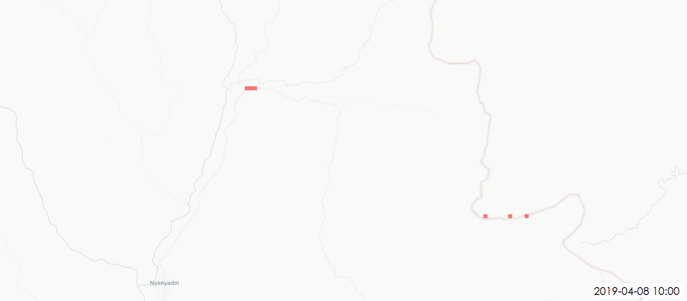

Export the mapped tasks of a specific project from the Tasking Manager with their completion date and time.
Enter the number of a project and click on the Load button.
Use the Time Manager plugin for QGIS to create a cool animation of the evolution of the mapping :
